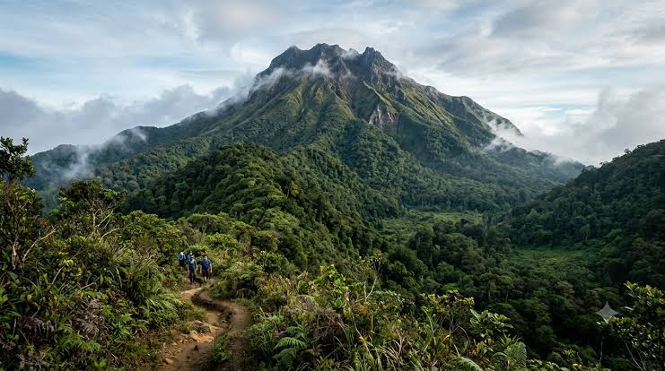

Park Profile • Davao Region
Mount Apo Natural Park
Mount Apo is the Philippines’ highest mountain and supports rich forests and wildlife. Climbing requires preparation, permits, and respect for local communities and conservation rules.
Mt. Apo Natural Park (MANP) is the highest mountain peak in the Philippines with an elevation of 2,954 meters above sea level and a land area of 65,900.9 hectares. It is geographically located between Region XII comprising the province of North Cotabato and Region XI comprising the province of Davao del Sur. In North Cotabato, it is bounded in the municipalities of Magpet and Makilala and the City of Kidapawan; in Davao del Sur, it straddles in the municipalities of Bansalan and Sta. Cruz, the City of Digos and the City of Davao.
Mt. Apo Natural Park is declared as a protected area under the National Integrated Protected Areas System (NIPAS) Act, or Republic Act No. 7586 enacted and approved on June 1, 1992 by former President Corazon C. Aquino. More importantly, Mt. Apo was recognized internationally as one of the heritage sites by the Association of Southeast Asian Nations (ASEAN).
Topography and Soil Type
MANP is typically volcanic terrain, characterized by gentle to moderate up to rugged slopes or inclinations. Features include cinder cones, breached craters and volcanic plateaus. Soil type is clay-loam fertile volcanic. In the forested area, soils have high organic matter content due to abundant vegetation.
Climate and Hydrology
Mt. Apo generally enjoys tropical rainy climate. Rainfall is relatively distributed throughout the year. Mean monthly temperature ranges from a low 26.4 degrees Celsius to 27.9 degrees Celsius. The natural park has 19 major rivers and 21 creeks draining its 8 major watersheds. It has 4 major lakes and many waterfalls and hot spring.
Biodiversity
Studies show that Mt. Apo is a rich botanical garden in Southeast Asia with around 800 types of flora. Around 27 floral species have economic, cultural and medicinal significance. Famous native tree species found at the higher elevation include *tinikaran.* In terms of fauna, there are around 272 types of birds and 54 species of mammals including the national bird, the Philippine Eagle. Out of 414 faunal species, 207 of it are endemic to Mt. Apo. Some 146 of faunal and 27 floral species have economic, cultural and medicinal significance.
Helpful reminders
- Check official park announcements and local weather before visiting.
- Follow posted rules and instructions from park staff or guides.
- Respect nature and local communities; take all trash with you.